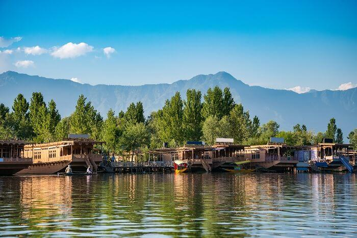

1 / 3

Caption one
2 / 3
Caption Two
3 / 3

Caption Three
3 / 3

Caption four
3 / 3
Caption five
In Kashmir, summers starts from May and continue till August, while in Jammu, they last from March to April. The temperature during this time ranges between 14°C to 30°C. On some days, it can get warm, particularly during the afternoons, but compared to the plains, it is relatively cooler and pleasant. Tourists visiting it during this time will find the weather to be quite amicable and welcoming.
Planning a trip to Kashmir Valley during this time can be very rewarding. You can visit all the famous tourist attractions in Kashmir with the lovely weather keeping you company. Enjoy various activities like, a houseboat ride on the Dal Lake, gondola ride in Gulmarg, sightseeing in Pahalgam and exploring the valleys of Sonmarg.
In Jammu, it’s an entirely different story. Here, summers are hot, with temperatures going as high as 45°C. On days when the heat is relentless, you could mistake it for being a district in Uttar Pradesh or Rajasthan.
You can visit the famous sightseeing spots in Jammu if you are used to travelling in hot weather. Some of the famous sightseeing tourist attractions in Jammu are Mubarak Mandi Palace, Bagh-e-Bahu, Bhimgarh Fort, Mansar Lake, Raghunath Temple, Amar Mahal Palace and Dogra Art Museum.
Ladakh, during the summers, receives a kind of weather similar to Kashmir. On some days, the mercury touches the 30°C mark, while on some days, it plummets to around 16°C. The snow which dresses the landscape is replaced by a bursting forth of colours which bring out its spectacular beauty.